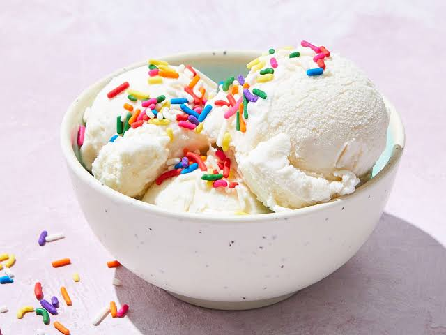

Ice Cream

Description
This is an easy three ingredient recipe for making homemade Ice-Cream.
The steps for making the ice cream is easy as drinking water, without using an Ice-cream machine. You can use this recipe to make lots of different flavored Ice-cream that you and your family can enjoy.
This recipe is for making vanilla ice cream but, you can be creative and make lot of different flavors using less ingredients.
Ingredients
- 1-carton of heavy whipping cream
- 1-can of condensed milk
- 1-Teaspoon of vanilla
Steps
- Beat the cold heavy whipping cream and a teaspoon of vanilla extract together till it becomes stiff, make sure not to over whipped the cream;
- Add the condensed milk on to the whipped cream and mix to combine but, do not over do the mixing;
- Pour the mixture into a container of your choice, and put it in the refrigerator for 4 hours or over night;
- Serve with any topping you like and enjoy!
Home